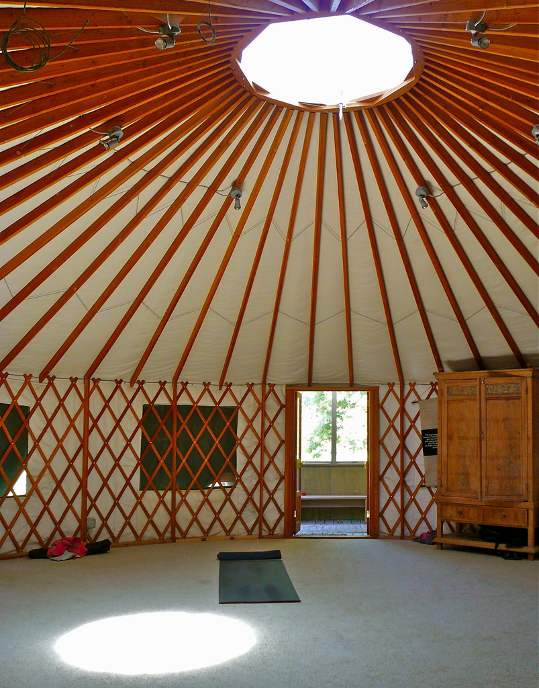
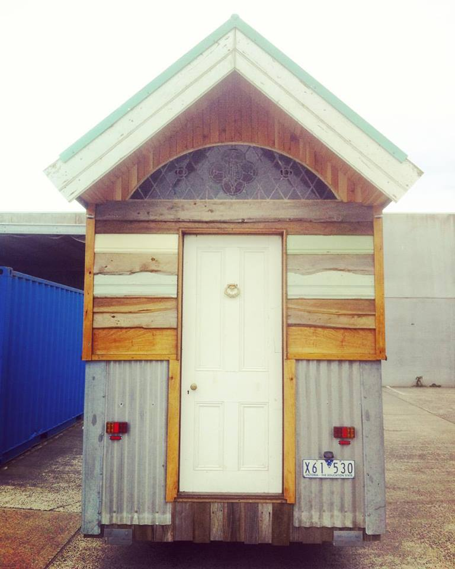

Image attribution : Brett and Sue Coulstock
Image attribution : Laurence Elsdon
Image attribution : https://www.flickr.com/photos/89654772@N05/
Image attribution : James Good
Image attribution : James Good
Image attribution : James Good
Image attribution : Museum Girl
Image attribution : Howard middleton-jones
Temporary Dwellings, Small and Tiny Houses
Image attribution : Prashant Ram

Image attribution : ideowl

Image attribution : Emmett Blackwell
Image attribution : Eve Jeffery
Image attribution : Eve Jeffery